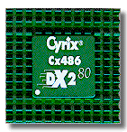
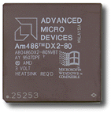
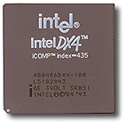
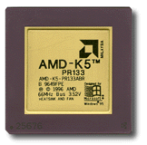
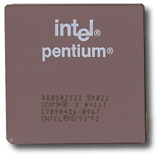
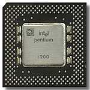

AMD K5 100MHz
(PR75-PR133)
AMD K5 133MHz


INTEL Pentium 133MHz,
P54C
(75MHz-200MHz)
(155MHz-233MHz)
| Proizvoðaè | CPU tip | Single Voltage | Dual Voltage |
| Intel AMD IBM/Cyrix |
P54C/P54CS K5 6x86 |
3,5V | |
| Intel AMD |
P54C/P54CS K5 |
3,4V |
|
| AMD (.35micron) | K6-PR233 | 3,2V | |
| AMD (.35micron) IBM/Cyrix |
K6-166,200 6x86MX |
2,9V | |
| Intel | P55C-MMX | 2,8V | |
| AMD (.25micron) | K6-233, 266, 300 | 2,1V |
Izvodi logièke i matematièke operacije. Najpoznatija je INTEL porodica 80x86 sa 80x87 koprocesorima. Sve aritmetièke (pa i najsloženije) operacije svode se na sabiranje i oduzimanje (npr. množenje kao uzastopno sabiranje a delenje kao uzastopno oduzimanje). To praktièno znaèi da se za komplikovanije operacije utroši više procesorskog vremena, ciklusa, u kojima se izražava brzina procesora (npr. 10MHz, 33MHz ili 50MHz). Brzina izvršavnja operacija izražava se u MIPS-ima (Milionima operacija u sekundi). Procesori u isto vreme mogu obraðivati 8, 16 ili 32 bita (XT, AT, 386 ili 486 respektivno).
Na primer kompjuter sa procesorom 80386/25MHz ima brzinu od 4 MIPSa. Od broja bita koji se istovremeno obraðuju (32) i od ueestanosti na kojoj procesor radi (25MHz), zavisi brzina izvršavanja (4 MIPSa).
Savremeni procesori za normalan rad zahtevaju cooler. To je aluminijumski hladnjak na koji je montiran mali ventilator.
{kind=link}